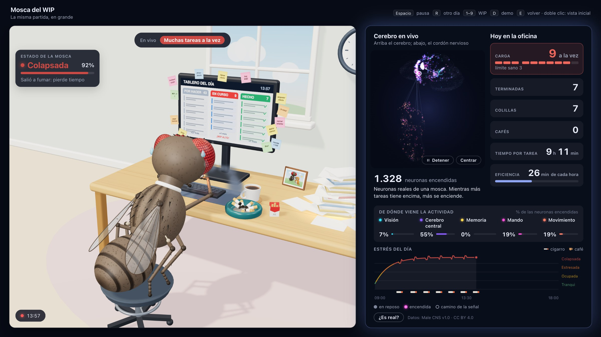
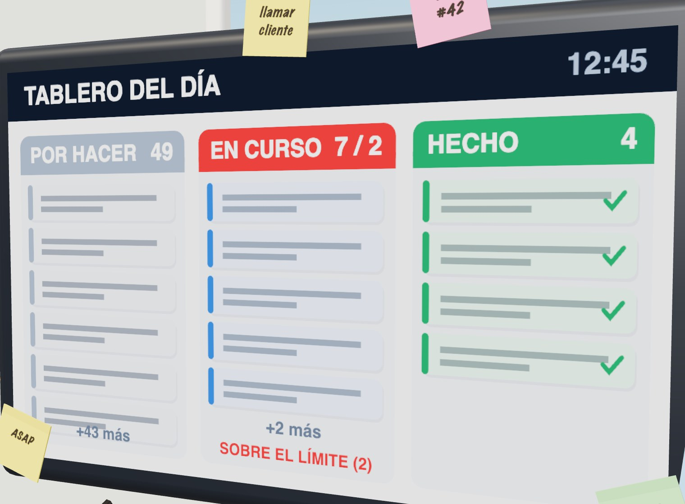
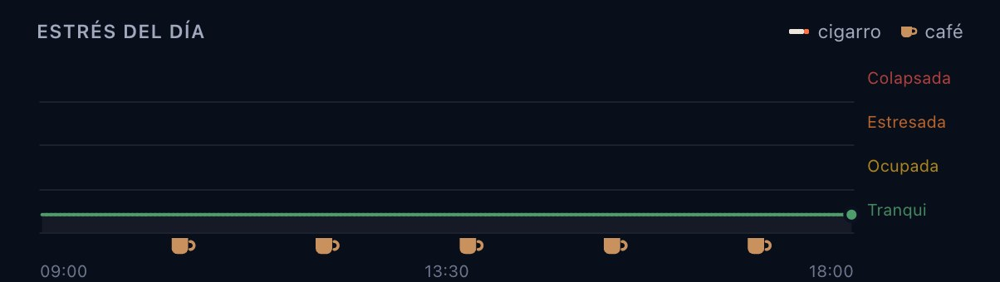
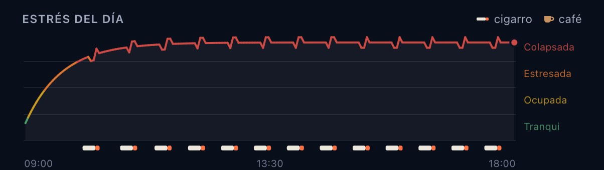
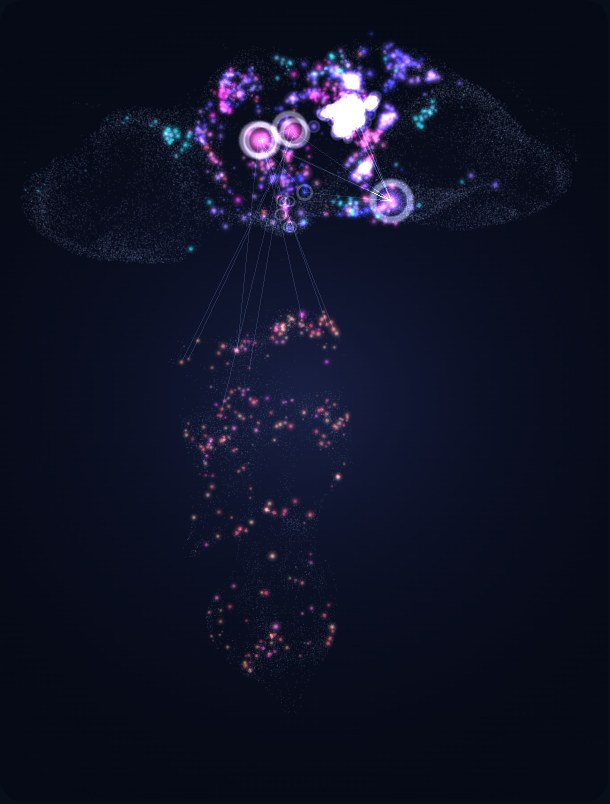

Una mosca con demasiadas tareas abiertas. Lo que le pasa explica por qué los equipos rinden más cuando se ponen un límite.
Felipe Fernández Un juego 3D sobre el trabajo en curso
En la portada, la mosca del juego en holograma. Los puntos de colores son neuronas de una mosca real.
Antes de empezar
Una mosca, un tablero y un día de oficina
Mosca del WIP es un juego que corre en el navegador. Lo hice para mostrar, sin diapositivas ni fórmulas, qué le pasa a cualquiera que tiene demasiadas cosas abiertas al mismo tiempo.
La protagonista es una mosca de la fruta con cuello de camisa y corbata. Trabaja frente a un tablero con tres columnas: Por hacer, En curso y Hecho. Antes de empezar el día, alguien decide cuántas tareas puede tener abiertas a la vez, de 1 a 10. En los equipos a ese número se le llama WIP, de work in progress: trabajo en curso. Aquí basta con pensar en "cuántas cosas a la vez".
Un día de oficina, de 9 a 18, dura un minuto. Jugamos 200 días con cada número y comparamos. Los resultados de las páginas siguientes son esos promedios.

Así se ve en una pantalla grande. A la izquierda, la oficina de la mosca. A la derecha, su cerebro, que se enciende según lo que le pasa, y los números del día: cuántas tareas tiene a la vez, cuántas terminó, cuánto tarda cada una y cuántos minutos de cada hora le rinden. Abajo, su estrés durante el día.
Cómo está contado
Primero, dos días de la mosca. Después, cinco lecciones para los equipos y lo que pasa en su cerebro. Al final, qué es real y qué es juego, frases para charlas y las fuentes.
Una aclaración
Los números exactos son del juego y sirven para ilustrar. Lo que tiene respaldo en estudios es la dirección: qué mejora y qué empeora cuando se abren más cosas a la vez (página 11).
Mosca del WIP · Felipe Fernández2 / 15
Día 1
Dos tareas a la vez
A la una y media la mosca trabaja tranquila. Tiene dos tareas en curso y la columna Hecho se va llenando. El cenicero está vacío y al lado humea el café.
Dos es un buen número para ella. Cuando una tarea se traba esperando la respuesta de otra persona, sigue con la otra y no pierde el tiempo. Cuando una se termina, toma la siguiente. Avanza en las dos por turnos, y cambiar entre solo dos cuesta poco. Como no se estresa, de vez en cuando se toma un café.
18tareas terminadas en el día
1 horatarda cada tarea, de que empieza a que termina
0cigarros
50 minde cada hora rinden de verdad
Promedio de 200 días con dos tareas a la vez.
Terminó el doble que con nueve, cada tarea salió en una hora y cerró el día tranquila.
Mosca del WIP · Felipe Fernández3 / 15
Día 2
Nueve tareas a la vez
El mismo día, la misma mosca y las mismas tareas por hacer. Lo único que cambió es el límite: ahora puede tener nueve abiertas a la vez.
A la misma hora el monitor está lleno de post-its, la pila de papeles es una torre y la columna En curso está en rojo. Salta de una tarea a otra, se le caen gotas de sudor y sale a fumar una y otra vez. El cenicero ya tiene varias colillas, y el día recién va en la mitad.
9tareas terminadas en el día
9 horastarda cada tarea, de que empieza a que termina
13cigarros
25 minde cada hora rinden de verdad
Promedio de 200 días con nueve tareas a la vez.
Trabajó lo mismo. Terminó la mitad, cada tarea tardó nueve veces más y cerró el día colapsada.
Mosca del WIP · Felipe Fernández4 / 15
1Lección
Un límite sano, no una cosa a la vez
Uno pensaría que lo mejor es hacer una sola cosa a la vez. En el juego no es así, y en los equipos reales tampoco.
Más o menos una de cada cinco tareas se traba un rato, esperando a otra persona. Con una sola tarea abierta, cada vez que pasa eso la mosca se queda mirando la pantalla: pierde más de dos horas al día esperando.
Con dos, siempre tiene con qué seguir, y por eso es donde más termina. Con tres todavía está tranquila. Desde la cuarta, cada tarea extra le cuesta un poco más que la anterior.
Una tarea trabada esperando a otra persona: la tarjeta se pone roja y con candado.
Tareas terminadas en un día según cuántas tiene abiertas a la vez. Promedio de 200 días por cada número.
No hay un número mágico en que todo se rompe de golpe: se va poniendo peor de a poco. Algo parecido se ha visto en equipos de investigación: estar en muy pocos frentes o en demasiados rinde menos que un punto intermedio.
El mensaje no es "una cosa a la vez". Es un límite sano, con espacio para cuando algo se traba.
Mosca del WIP · Felipe Fernández5 / 15
2Lección
Empezar muchas cosas a la vez retrasa todo
Con nueve tareas abiertas, cada una tarda nueve horas. Con dos, una hora. La mosca no trabaja más lento: reparte su tiempo entre todas.
Cuánto tarda cada tarea, de que empieza a que termina, según cuántas tiene abiertas a la vez. Promedio de 200 días por cada número; se cuentan horas de oficina.
Cuando tiene muchas tareas abiertas, avanza un poquito en cada una, por turnos. Todas avanzan parejo, así que ninguna termina pronto. Y cada vez que cambia de tarea pierde un rato en retomar donde iba. El ejemplo de abajo lo muestra con ocho tareas de una hora cada una:
Ejemplo con la regla del juego para cambiar de tarea: con dos tareas a la vez rinde el 85 % de cada minuto; con ocho, el 55 %. Las barras muestran cuándo empieza y termina cada tarea.
A las 18:00, de a dos hay 6 tareas listas. Con las ocho empezadas a la vez, ninguna: todas van a poco más de la mitad.
Lo descubrimos por accidente
Probando el juego, un día con diez tareas a la vez llegó a media tarde sin ninguna tarea terminada. Parecía un error, y en parte lo era: ese día la mosca había empezado siete tareas nuevas de golpe. Avanzaron juntas y terminaron casi al mismo tiempo, al final del día. Arreglamos el juego para que eso no pase por accidente, pero la lección se quedó.
Mosca del WIP · Felipe Fernández6 / 15
3Lección
Lo empezado no desaparece
Bajar el límite no borra lo que ya está empezado. Primero hay que terminarlo, y eso toma tiempo.
Hicimos la prueba: un día con diez tareas a la vez y, a las 12:00, bajamos el límite a dos. Las diez tareas siguieron ahí. La mosca dejó de tomar nuevas y se dedicó a cerrar las que tenía, de a dos.
Recién a las 14:35 volvió a tener dos abiertas, y se calmó cerca de las 15:10: tres horas después del cambio. Estresarse le había tomado menos de una hora.

Mientras termina lo empezado, el tablero avisa que está sobre el nuevo límite.
Tareas en curso y estrés de la mosca en un día que parte con diez tareas a la vez y a las 12:00 baja a dos. Promedio de 300 días. Los dientes del estrés son los cigarros: alivian un rato y después vuelve a subir.
Cuando un equipo decide ponerse un límite, los resultados no llegan al día siguiente. Primero hay que vaciar lo que ya está empezado.
Mosca del WIP · Felipe Fernández7 / 15
4Lección
La Eficiencia: cuántos minutos de cada hora rinden
Estar ocupado no es lo mismo que avanzar. El juego mide qué parte de cada hora se convierte en trabajo de verdad.
De cada hora se descuenta el tiempo que la mosca pierde al cambiar de tarea, las salidas a fumar, los cafés y los ratos que pasa esperando a otros. Lo que queda es lo que rinde.
Con 2 tareas a la vez rinde 50 minutos de cada hora. Con 9, solo 25.
Minutos de cada hora que rinden de verdad, según cuántas tareas tiene abiertas a la vez. Promedio de 200 días por cada número.
Qué se come los minutos
Con una sola tarea
Esperar a otros. Cuando su única tarea se traba, no tiene nada más que hacer.
Con dos o tres
Casi nada: cambiar entre pocas tareas cuesta poco, y se toma algún café.
Con muchas
Cambiar de tarea una y otra vez, y salir a fumar.
Hasta el café descuenta: mientras toma café no trabaja. Pero es una pausa que la ayuda a recuperarse, y por eso vale la pena (lección 5).
Mosca del WIP · Felipe Fernández8 / 15
5Lección
El estrés sube rápido y baja lento
Lo que estresa a la mosca son las tareas que tiene abiertas. Y la mala pausa no la calma.

Con 2 tareas a la vez. La línea se queda abajo todo el día. Cada tacita es un café.

Con 9 tareas a la vez. Sube a "Colapsada" en menos de una hora y no baja. Cada marca blanca es un cigarro.
Fumar no la calma. Le da un alivio breve y después un rebote que lo anula, como describen los estudios: el cigarro solo alivia la ansiedad que el mismo cigarro provoca. Y cada salida son minutos sin trabajar.
El café es la pausa sana. Solo le dan ganas cuando está tranquila, y la ayuda a recuperarse un poco más rápido. Con estrés alto, el café se enfría en la taza.
Lo único que la calma de verdad es tener menos tareas abiertas.
Con nueve tareas, a media tarde: otra salida a fumar.
Mosca del WIP · Felipe Fernández9 / 15
Lo que pasa en su cabeza
El cerebro de la mosca
El panel oscuro del juego muestra neuronas de una mosca de la fruta real, cada una en su lugar.
2 tareas a la vez: casi todo en reposo.

9 tareas a la vez: tres veces más neuronas encendidas.
Los puntos salen de un mapa científico público del sistema nervioso completo de una mosca macho: dónde está cada neurona y con cuáles se conecta. Arriba está el cerebro; abajo cuelga el cordón nervioso, que lleva las órdenes al cuerpo.
Para encenderlo tradujimos las tareas abiertas en algo que una mosca sí siente: polvo en las antenas. Mientras más tareas, más fuerte la señal. Después simulamos, sobre las conexiones reales, cómo viaja esa señal. Esto encontramos:
Con nueve tareas se encienden tres veces más neuronas que con dos.
Con dos tareas, la señal casi no llega a las neuronas que mueven el cuerpo. Con nueve, enciende 65 de ellas.
La señal no prende todo el cerebro: viaja por un camino. Incluso con diez tareas se enciende menos del 1 %.
En una mosca real, esa señal es la orden de limpiarse las antenas con las patas. En el juego la disfrazamos de cigarro.
Es una simulación con un modelo simple de neuronas, no una medición en una mosca viva. Más detalle en la página siguiente.
Mosca del WIP · Felipe Fernández10 / 15
¿Esto es real?
Qué es real, qué está respaldado y qué es juego
Es lo primero que pregunta la gente. La respuesta corta: la dirección es real; los números exactos son del juego.
Qué
Es
Por qué lo decimos
Las neuronas y sus conexiones
Real
Vienen de un mapa público del sistema nervioso de una mosca macho, hecho por equipos científicos. Cada punto está donde hay una neurona.
Las luces del cerebro
Simuladas
Un modelo simple de neuronas calcula cómo respondería ese cableado real. Es una simulación: nadie midió una mosca viva.
"Más tareas, más polvo en las antenas"
Decisión nuestra
Es la traducción que elegimos para que una mosca "sienta" la carga de trabajo. Una mosca real no sabe qué es una tarea.
Las tendencias del juego
Respaldadas
Con más cosas a la vez, cada una tarda más, se rinde menos, sube el estrés y cuesta bajarlo; con esperas por otros, una sola tarea no es lo mejor. Hay estudios detrás de cada una (página 14).
Los números exactos
Ilustrativos
Las 18 tareas, las 9 horas, los 13 cigarros o los 50 minutos se eligieron para que el efecto se vea en un día que dura un minuto. En otro equipo serán otros.
El cigarro
Disfraz
Las moscas no fuman. Es el disfraz de limpiarse las antenas, que es lo que la señal enciende de verdad en la simulación.
El café
Ilustrativo
Representa una pausa. Lo probamos con el sabor dulce en la simulación, pero no alcanzó a mover la trompita de la mosca, así que no lo presentamos como real.
Tiempo por tarea y tareas en curso
Matemática
Más tareas abiertas, con el mismo ritmo de salida, significa que cada una tarda más. Es una ley de las colas (ley de Little) y el juego la cumple.
Si alguien pregunta "¿esto es real?"
"La dirección es real: con más trabajo en paralelo cada cosa tarda más, se pierde tiempo al cambiar de tarea y sube el estrés. Los números exactos son del juego. Las neuronas son de una mosca real y sus luces vienen de una simulación. Y el cigarro es un disfraz: las moscas no fuman."
Mosca del WIP · Felipe Fernández11 / 15
Para los equipos
Qué aprendemos de la mosca
Cinco ideas para llevarse a la próxima reunión de equipo.
1
Pónganse un límite sano
No hace falta hacer una sola cosa a la vez: conviene tener un respaldo para cuando algo se traba esperando a otros. Pero el límite tiene que existir y respetarse. En el juego, lo mejor fue dos o tres tareas a la vez.
2
Terminen antes de empezar
Cada tarea nueva que se abre atrasa a las que ya estaban. Antes de tomar algo nuevo, vale la pena preguntarse qué se puede cerrar.
3
Denle tiempo al cambio
Si bajan el límite, lo empezado no desaparece. Las primeras horas o días se van en terminar lo que ya estaba abierto. No es que el límite no funcione.
4
Miren cuánto rinde la hora
Tener muchas cosas abiertas se siente productivo, pero lo que importa es cuánto se termina. Con nueve cosas a la vez, la mitad de cada hora se pierde.
5
El estrés se baja con menos carga
Las malas pausas no lo arreglan. Lo que calma es tener menos cosas abiertas, y las pausas sanas ayudan a recuperarse.
Para probarlo con un equipo
Pregunten cuántas cosas tiene abiertas cada persona hoy. Acuerden un límite y escríbanlo en el tablero. Durante dos semanas miren cuánto se termina y cuánto tarda cada cosa, no qué tan ocupados se ven.
Lo que el juego no dice
El número exacto depende de cada equipo y de su trabajo. El juego muestra hacia dónde se mueven las cosas; para elegir el límite propio hay que mirar los datos del propio equipo.
Mosca del WIP · Felipe Fernández12 / 15
Para contarlo
Frases para charlas
Cada una dice de dónde sale, para que nadie se lleve una idea equivocada.
No es una cosa a la vez: es un límite sano.Con esperas por otros, la mosca termina más con dos tareas que con una.
En el juego, con 2 tareas a la vez rinde 50 minutos de cada hora; con 9, solo 25.Promedio de 200 días por cada número. Los minutos son del juego.
Si empiezas muchas cosas a la vez, avanzan parejo y terminan todas tarde.Lo vimos por accidente: siete tareas empezadas de golpe, ninguna lista hasta la tarde.
Lo empezado no desaparece: bajar el límite no borra el trabajo a medias.En el juego, calmarse toma tres horas; estresarse, menos de una.
Fumar no le baja el estrés: solo alivia la ansiedad que el mismo cigarro provoca.Así lo describen los estudios sobre tabaco y estrés.
En la simulación, con 2 tareas la señal casi no llega a las neuronas que mueven el cuerpo; con 9, enciende 65.Simulación sobre el mapa real de una mosca, con un modelo simple de neuronas.
La señal no prende todo el cerebro: viaja por un camino específico.Incluso con diez tareas se enciende menos del 1 % de las neuronas, según la simulación.
El cigarro es un disfraz: la mosca en realidad se está limpiando las antenas. Las tareas son polvo en sus antenas.Limpiarse las antenas es una conducta real y estudiada de la mosca.
Mosca del WIP · Felipe Fernández13 / 15
Fuentes
De dónde sale cada idea
Las fuentes clave, en simple. Respaldan la dirección del juego, no sus números exactos.
Más tareas abiertas, más tiempo por tareaSi sale lo mismo y hay más cosas adentro, cada una se demora más. Es matemática. Little, J. D. C. (1961). Operations Research, 9(3).
Cambiar de tarea cuestaCada cambio cuesta tiempo, más si las tareas son complejas. La tabla famosa de "20 % por proyecto" es una regla práctica, no una medición. Rubinstein, Meyer y Evans (2001). Weinberg (1992).
Lo que queda a medias sigue en la cabezaParte de la atención se queda pegada en lo que no se terminó, y se rinde peor en lo siguiente. Leroy, S. (2009). Organizational Behavior and Human Decision Processes, 109(2).
Las interrupciones estresanQuienes fueron interrumpidos trabajaron más rápido, pero con más estrés y frustración. Mark, Gudith y Klocke (2008). CHI '08.
Ni muy pocos ni demasiados frentesEn equipos de investigación, estar en muy pocos o en demasiados equipos a la vez rinde menos que un punto intermedio. Bertolotti y otros (2015). Research Policy, 44(4).
El estrés sube rápido y baja lentoLa hormona del estrés llega a su pico en 20 a 40 minutos y tarda del orden de una hora en volver a lo normal. Dickerson y Kemeny (2004). Psychological Bulletin, 130(3).
Fumar no baja el estrésEl alivio es solo el de la abstinencia entre cigarros; quienes dejan de fumar quedan con menos estrés. Parrott (1999). Taylor y otros (2014), BMJ.
Las pausas cortas ayudan, pero pocoSuben el ánimo y bajan el cansancio. La cafeína sube la hormona del estrés, y más con estrés alto. Albulescu y otros (2022), PLOS ONE. Lovallo y otros (2005, 2006).
Cómo se limpia las antenas una moscaSensores en la antena, unas pocas neuronas de relevo y las que dan la orden a las patas. Hampel y otros (2015, 2020), eLife. Seeds y otros (2014), eLife.
Simular el cerebro de una mosca con su mapaCon un modelo simple de neuronas sobre el cableado real se pueden predecir conductas. Shiu y otros (2024). Nature, 634.
Datos del cerebro: Male CNS connectome v1.0 (FlyEM, HHMI Janelia, y colaboradores), licencia CC BY 4.0. Berg y otros (2026), Cell, 189(18). male-cns.janelia.org.
Imágenes: todas son del juego Mosca del WIP y de su arte de portada.
Autor: Felipe Fernández, octubre de 2026.
Mosca del WIP · Felipe Fernández14 / 15
Un límite sano, no una cosa a la vez.
Así termina un buen día: dos tareas abiertas, para seguir con una cuando la otra se traba, la columna Hecho llena y el café todavía caliente. Mañana a las nueve la mosca vuelve a empezar, con el límite que tú elijas.
Mosca del WIP · Felipe Fernández · octubre de 2026. Datos del cerebro: Male CNS connectome v1.0, CC BY 4.0.